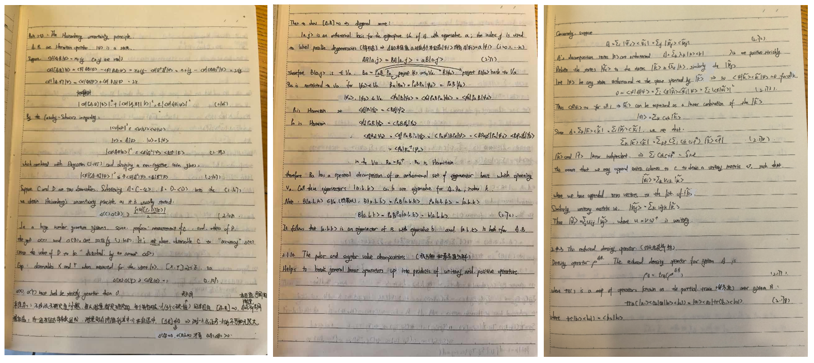
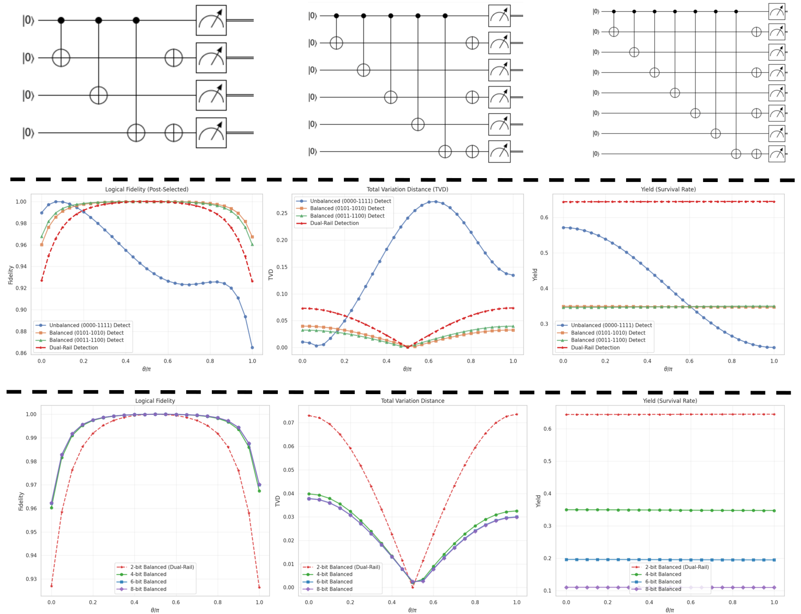
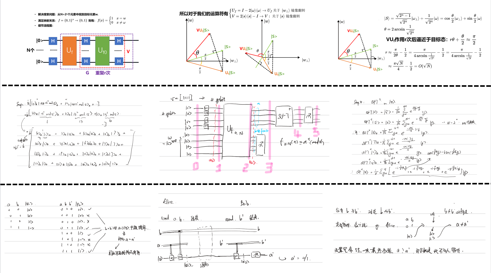
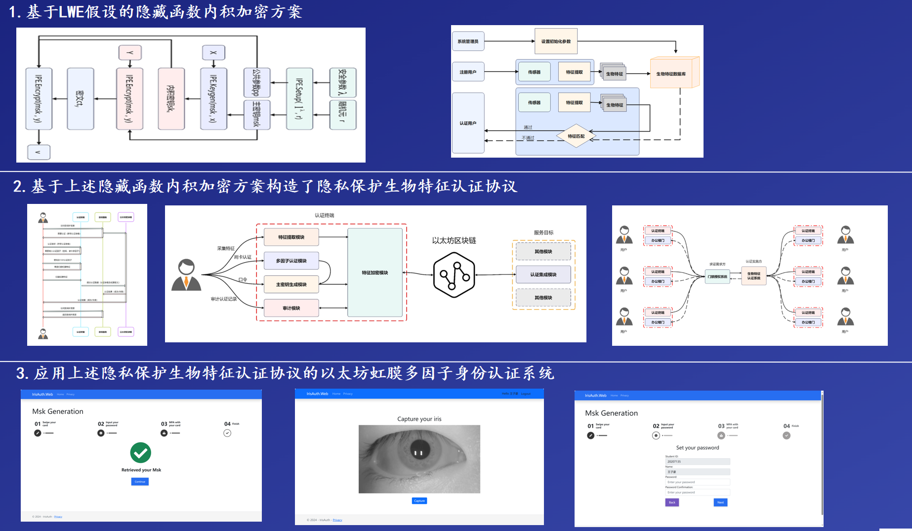
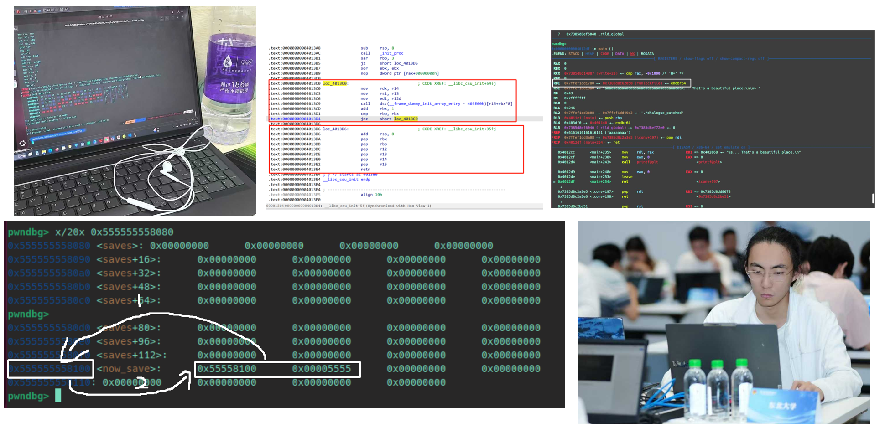

Bachelor of Engineering · Information Security
2023 – 2027Northeastern University, Software College
Nickname · 枫林路大砍刀
Security Researcher · Quantum Enthusiast · CTF Player
“没有天赋，那就重复。”
Northeastern University, Software College
Quantum information security · Quantum key protocols · Quantum cryptography & practical security analysis · Quantum error correction & error handling · Reliability and security in quantum computing systems
Organized by Prof. Zhaofeng Su (USTC) as a public-welfare program. Intensively studied Nielsen & Chuang's Quantum Computation and Quantum Information over the summer: daily reading, problem sets, and online whiteboard sessions (every 3 days, 2–3 students per session, ~1.5 h each). Thoroughly covered Chapters 2–5 plus selected error-correction chapters, supplementing gaps with external resources and AI assistance. Maintained detailed derivation notes resolving unclear steps in the textbook.

Theory: Derived error models in Jupyter (analytical) and by hand. Systematically compared 2-bit repetition coding (00/11) vs. 2-bit dual-rail coding (01/10) under readout errors, single-qubit gate errors, and two-qubit depolarizing errors, using fidelity / TVD / yield as evaluation metrics. Simulation pipeline built with Qiskit.
Real-device experiments: Ran experiments on Tianyan-176, Wukong-72, and Wukong-180 quantum cloud processors via Cirq, QPanda3, PyQuanFu, and Ising frameworks. Compared no-encoding / repetition / dual-rail schemes on real hardware.
Key findings: Dual-rail outperforms on logical |+⟩ and |1⟩ states; repetition is best for logical |0⟩ (encoded as |00⟩, no 1s). Results confirm theory: dual-rail benefits from balanced 0/1 occupation.
Special note: Discovered an undocumented idle-gate time parameter in QPanda3 during internal testing of Wukong-180. Reverse-engineered the compiled .pyd file at the assembly level using decompilation techniques, confirmed the parameter as 1 µs in coordination with the official team.
Studied Shor coding and classical information theory (Thomas Cover's Elements of Information Theory). Extended 2-bit work to 3-bit / 4-bit error-detection codes across two sub-directions:
Direction 1: Under a unified noise model, evaluated ML / MAP / Probabilistic / manual hard-decoding strategies for 3-bit and 4-bit codes and compared them with dual-rail. Found that specific manual hard-decoding schemes outperform ML/MAP/Probabilistic under the current model. Future work: diversify noise models and validate on real hardware.
Direction 2: Explored the relationship between redundancy bits, discard rate, and accuracy. Increasing redundancy while retaining only codeword states raises the discard rate; decoding strategy also shifts the accuracy–retention trade-off.

Bridging traditional CTF security with quantum computing. Reproduced and independently implemented attack scripts for all existing quantum security challenges on Hack The Box, covering BB84/QKD with untrusted nodes, quantum teleportation, phase encoding, quantum random number generation, and entanglement circuit construction.
Highlight — BB84 MitM attack: Simulated an intercept-and-resend attack where the adversary intercepts 2 photons per logical bit, measures in both X and Z bases, and recovers the shared key by exploiting publicly announced basis-match information.
Published three articles on Kanxue Security Community; all three rated as Featured Posts (优秀博客). Two posts were actively promoted by the Kanxue official WeChat account. Total readership: 28,000+ views.
1. Quantum algorithm simulators (Qiskit) — Grover's algorithm (4-qubit, target 1111), Shor's algorithm (factoring 21 = 3×5), BB84 QKD protocol
2. AI-agent binary exploitation RAG card game — Autonomous agent capable of solving stack overflow, shellcode writing, sandbox bypass, and ROP challenges
3. CVE-2025-0411 phishing exploit — Reproduced the vulnerability and developed a proof-of-concept tool for file exfiltration and ransomware demonstration
4. MySQL honeypot for sensitive data tracing — Leveraged the LOAD DATA LOCAL vulnerability to build a monitoring and attribution honeypot

Collaborated with teammates under the supervision of Prof. Qiang Wang (NEU). Responsible for the blockchain module: on-chain authentication for each service request with traceable and auditable records, reducing the risk of iris data leakage. Pre-studied and reproduced several blockchain memory vulnerabilities before joining the project.

Full score in the qualifying round theory exam. Finals project: quantum machine learning prototype on insurance cost regression data using PyVQNet / PyQPanda3 — quantum feature encoding, variational quantum circuits, and QLSTM structures.
Full score in the qualifying round theory exam. Did not participate in the final due to scheduling conflict.

CTF PWN (binary exploitation) direction. Long-term CTF competitor; proficient in Linux binary exploitation, debugging, and scripted reproduction.
软件系统安全赛 — Provincial 2nd Prize
全国大学生信息安全大赛 — Provincial 2nd Prize
长城杯 — Provincial 3rd Prize
National Scholarship (国家奖学金) Top 0.2% nationally
NEU Second-Class Scholarship (东北大学校二等奖学金)
Activities
Captain, NEU CTF Team NEX (Class of 2023) — Binary / PWN direction lead
Class Monitor (班长)
Kickboxing (自由搏击) & Taekwondo — 2nd place, "Liu Changchun Cup" Taekwondo Kick Competition @ NEU
Charity:Donated quantum computing competition prize money in full to Han Hong Love Charity Foundation (韩红爱心慈善基金会)